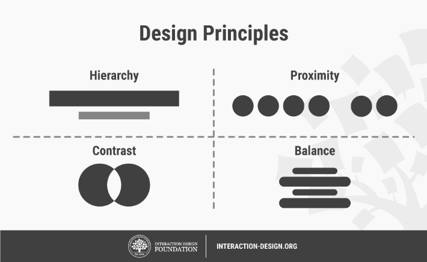
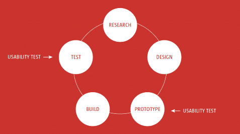

Web Design
About; Work; Blog; Contact
SEO Optimization
SEO involves making certain changes to your website design and content that make your site more attractive to a search engine. ... SEO is the process that organizations go through to help make sure that their site ranks high in the search engines for relevant keywords and phrases.
Search engine optimization is a methodology of strategies, techniques and tactics used to increase the amount of visitors to a website by obtaining a high-ranking placement in the search results page of a search engine (SERP) — including Google, Bing, Yahoo and other search engines.
Hosting & Domain Name
Web Hosting is an account on a computer (aka server) that can store and serve website files via the Internet. Domain Registration is leasing a human-readable word (e.g., amazon.com) that directs people to specific website files via a browser. As an analogy, a domain is an “address” on the Internet.
At the most basic level, web hosting accounts give you access to large computers, called servers, where you can store the files and information required to make a website or application. The servers connect to the internet to share and deliver that content to users.
Web hosting is a service that allows organizations and individuals to post a website or web page onto the Internet. ... Their computer will then connect to your server and your webpages will be delivered to them through the browser. Most hosting companies require that you own your domain in order to host with them.
UX Web Design Priniples
Design principles are widely applicable laws, guidelines, biases and design considerations which designers apply with discretion. Professionals from many disciplines—e.g., behavioral science, sociology, physics and ergonomics—provided the foundation for design principles via their accumulated knowledge and experience.

Usability testing asks users to interact with the design. Meanwhile, you take notes to see whether they encounter any problems.
If many people experience similar problems, you will have to make changes to the design to sort out the usability issue. Keep in mind that design is an iterative process and it demands improvements in all stages.
Hence, you should conduct usability tests throughout the UX design process, including before you start your initial design, during the prototyping phases, and at the end of the process.
